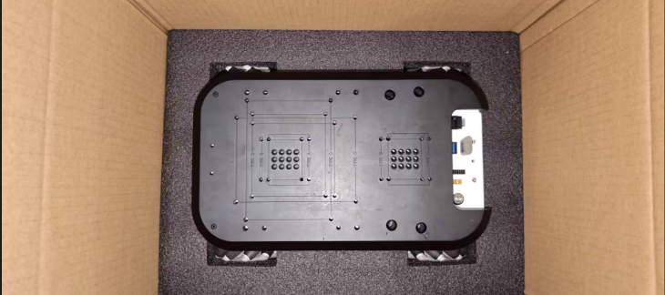

运输和储存

在运输过程中，应使用原包装运输myagv Plus。在运输过程中，应确保 myagv Plus整体稳定，并采取适当措施加以保护。
在运输和长期储存期间，环境温度应保持在 -20 至 +55°C，湿度 ≤95%，无凝露。
由于机器人属于精密机械，从包装中取出 myagv Plus 时应小心搬运。在运输过程中，如果放置不稳，可能会引起振动，损坏机器人的内部组件。
运输结束后，应将原包装妥善存放在干燥处，以备日后重新包装和运输之需。
 |
|---|
| 1 对运输过程中发生的任何损坏概不负责。 |
| 2 安装机器人时，请务必严格遵守安装说明。 |